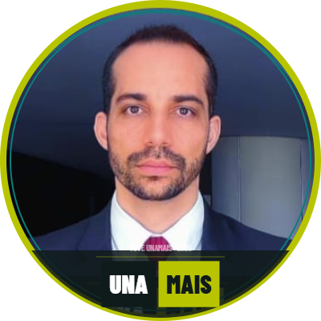

Conquistamos a ADI nº 4.151. A UnaMais vai garantir que esse direito chegue a cada servidor, aposentado e pensionista desta categoria.
Cada item é verificável. Balanço público ao final de cada ano de mandato — o que foi cumprido e por quê.
Enquadramento correto de todos os alcançados e pagamento retroativo via folha de pagamento, não via precatórios.
Frente jurídica estruturada perante STF, STJ, CARF, AGU e Justiça Federal.
O associado tem direito à informação sobre a gestão — nos limites da LGPD, do sigilo fiscal e contábil e das normas estatutárias.
Expansão do UNA+, comunicação segmentada e encontros regionais em todos os estados.
Núcleo permanente de atendimento e prioridade absoluta nos efeitos da ADI 4.151.
ADI 4.151 julgada procedente. Direito à equiparação reconhecido definitivamente.
Decisão definitiva, sem possibilidade de recurso pelo governo federal.
COGEP/RFB e MGI definem o formato. Aqui está a batalha atual da categoria.
Diferenças retroativas chegando ao contracheque de cada servidor e inativo.

Servidor da Receita Federal e advogado com atuação direta nos principais processos que definem os direitos desta categoria.
Por que candidato? Porque conquistamos a ADI 4.151 e precisamos de uma diretoria que não deixe essa vitória morrer na gaveta de um ministério.
Nos últimos anos, a UNASLAF demonstrou do que é capaz quando atua com seriedade técnica e firmeza institucional. Estivemos no STF, na AGU, no Ministério da Gestão e na Receita Federal defendendo aquilo que é nosso por direito.
A decisão na ADI nº 4.151 não foi um presente: foi o resultado de anos de trabalho jurídico qualificado e de uma associação que nunca abandonou seus filiados — ativos, aposentados e pensionistas.
Nossa chapa nasce do encontro entre a experiência de quem construiu essas vitórias e a energia de quem quer fazer mais e melhor. Não propomos ruptura. Não propomos acomodação. Propomos continuidade com renovação.
Escolha uma moldura, adicione sua foto e baixe pronto — sem instalar nada, sem sair desta página.
JPG, PNG ou WEBP · recortada em círculo automaticamente
Escolher fotoAjuste o zoom e a posição para centralizar seu rosto.
nas conversas do WhatsApp
1. Baixe a imagem · 2. Abra o WhatsApp · 3. Perfil → Foto → Editar · 4. Selecione a imagem baixada
Baixe e compartilhe os materiais oficiais da UnaMais. Cada associado que divulga é um voto a mais.
Posts prontos para WhatsApp, Instagram e Facebook.
Em breveMaterial para impressão e distribuição presencial.
Em breveVídeos para compartilhar nos grupos da categoria.
Em breveMensagens prontas para copiar e colar.
Em brevePara quem quer ajudar ativamente na campanha.
Em breveTodos os materiais em um único arquivo.
Em breveA ADI nº 4.151 foi ajuizada pela UNASLAF em 26/09/2008 e julgada procedente pelo STF em 2024. Reconhece o direito à equiparação salarial dos servidores da extinta Receita Previdenciária com os colegas da Receita Federal, com efeitos retroativos — para ativos, aposentados e pensionistas.
Precatórios têm fila e podem demorar anos. O pagamento via folha é imediato e incorpora permanentemente os valores à remuneração. A UnaMais vai lutar para impedir que o governo use o regime de precatórios como forma de protelar o pagamento.
Sim. A decisão do STF alcança ativos, aposentados e pensionistas. A UnaMais tem como prioridade garantir que nenhum inativo fique de fora — com núcleo dedicado de atendimento.
Relatório de atividades periódico com metas verificáveis e divulgação do balanço patrimonial após aprovação assemblear — respeitados os limites da LGPD, do sigilo fiscal e contábil e das normas estatutárias que reservam ao Conselho Fiscal e à Assembleia a fiscalização plena.
O UNA+ é o assistente virtual da UNASLAF. A UnaMais propõe expandir o sistema com disponibilidade 24h e cobertura segmentada para ativos, aposentados e pensionistas.
Registre seu apoio à chapa UnaMais. Enviaremos todas as informações sobre a votação antes da eleição.
Fale com nosso agente no WhatsApp. Tire dúvidas sobre a chapa, o programa e seus direitos.
Falar com a UnaMais no WhatsApp